QA Tester
Apasionada por la calidad del software, con experiencia en pruebas funcionales, validación de APIs y pruebas backend. Mi trabajo se centra en garantizar que cada desarrollo cumpla con los estándares de calidad, detectando errores y contribuyendo a la mejora continua dentro de equipos ágiles.
Ingeniera de Sistemas | QA Expert
Ingeniera de Sistemas con más de 10 años de experiencia en Aseguramiento de la Calidad (QA), especializada en transformar requerimientos complejos en soluciones estables, eficientes y de alta calidad. Cuento con experiencia en el diseño estratégico de historias de usuario, ejecución de pruebas funcionales, de regresión y validación de rendimiento, garantizando productos alineados con los objetivos del negocio y la experiencia del usuario.
Educación y Certificaciones
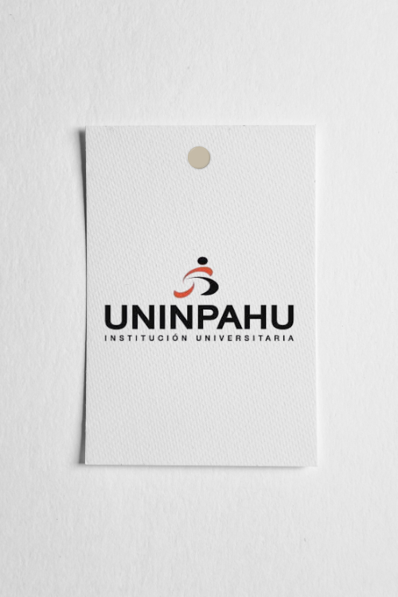
Especialización en Gerencia de Proyectos
Agosto 2018 – Septiembre 2021
Ingeniería de Sistemas
Agosto 2014 – Noviembre 2018
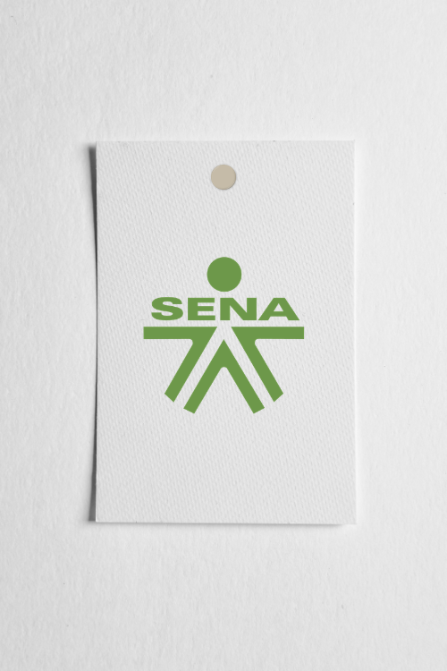
Tecnología en Análisis y Desarrollo de Sistemas
Enero 2011 – Mayo 2014
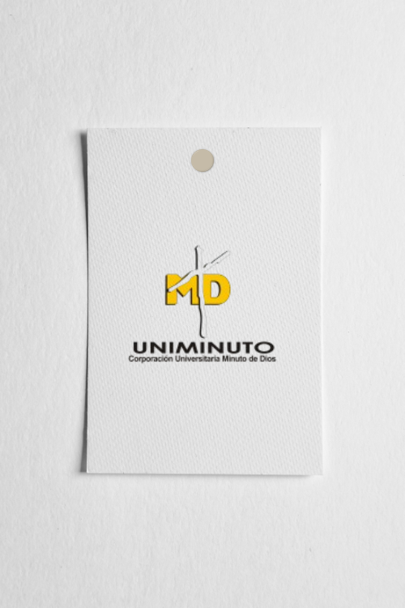
Tecnología en Informática
Enero 2007 – Octubre 2011
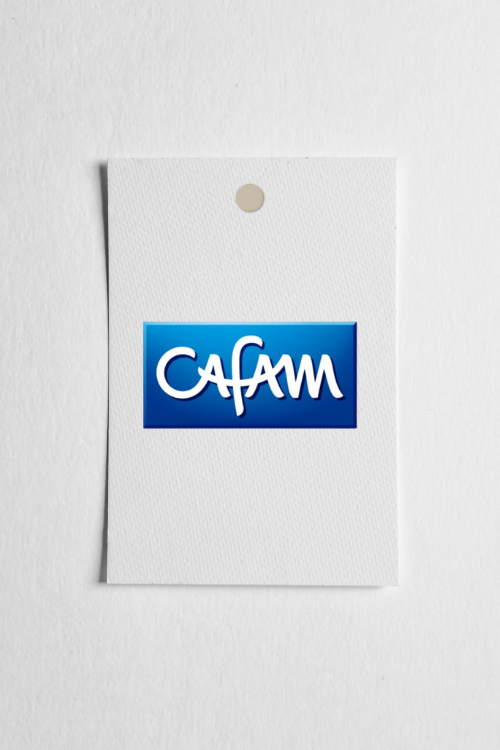
Diplomado en Proyectos PMI y Scrum
Diciembre 2024
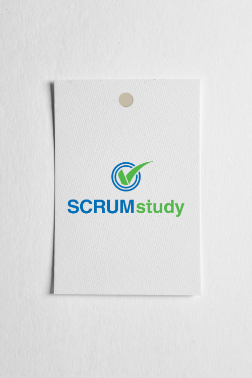
Scrum Fundamentals Certified
Agosto 2020
Experiencia Profesional
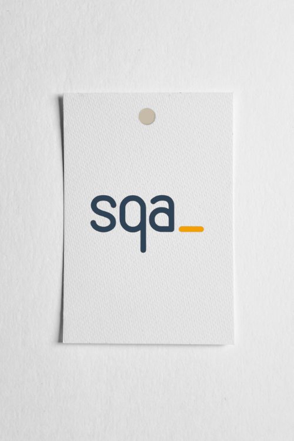
Analista de Pruebas
Estrategia de pruebas funcionales, gestión y análisis de datos.
{kind=link}
Enero 2026 - Actualidad
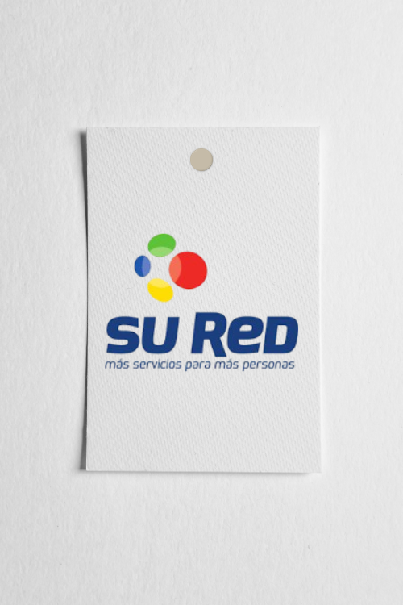
Analista Funcional
Pruebas Cross-browsing y agilismo en algunos entornos.
{kind=link}
Enero 2024 – Septiembre 2025
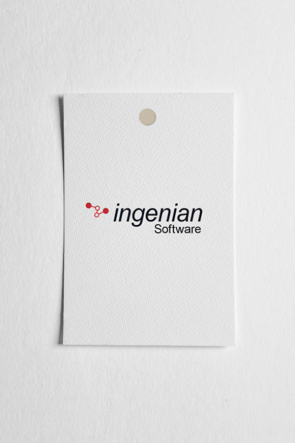
Gestión Documental
Documentación técnica y trazabilidad en proyectos de salud.
{kind=link}
Noviembre 2023 – Abril 2024
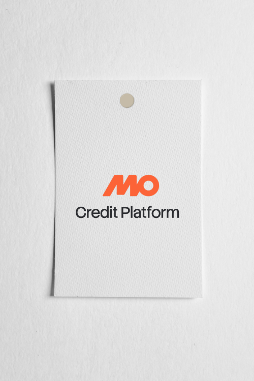
QA Manager
Liderazgo de equipos QA y automatización con integración continua.
{kind=link}
Enero 2022 – Diciembre 2023
QA Engineer I–II-III
Validación de microservicios (APIs/JSON) y plataformas web para entornos banking.
Noviembre 2019 – Diciembre 2021
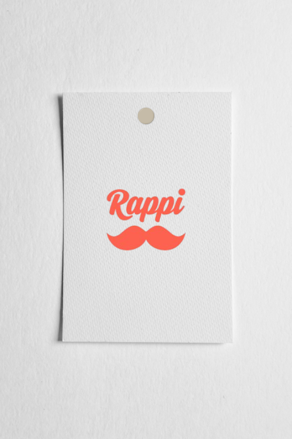
QA Tester
Pruebas Web/Mobile (iOS/Android), UX y validación de APIs.
{kind=link}
Mayo 2013 – Octubre 2019
Ingeniera de Pruebas
Planes de prueba y gestión de defectos críticos para el proyecto (Salud/HCEU).
Octubre 2018 – Mayo 2019
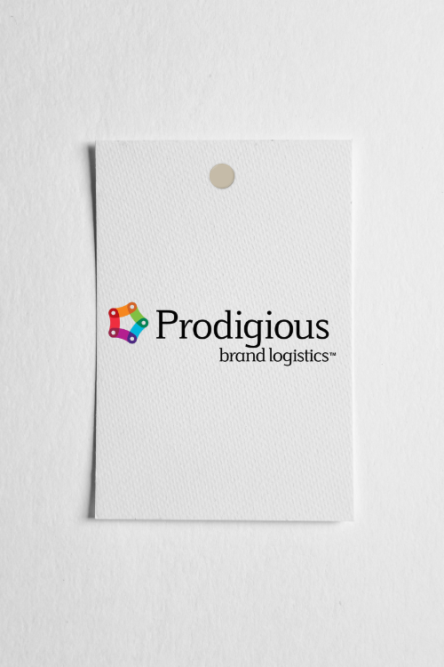
Senior QA Analyst
Automatización con Selenium + Cucumber con integración continua.
{kind=link}
Agosto 2017 – Agosto 2018
{kind=link}
{kind=link}
{kind=link}
{kind=link}
{kind=link}
{kind=link}
{kind=link}
{kind=link}
{kind=link}
{kind=link}
Habilidades:
- Gestión de Calidad & Mejora Continua
- Automatización de Pruebas
- Metodologías Ágiles (Scrum)
- Jenkins & CI/CD
- SQL Server
- Azure DevOps
- Git / GitHub
- Pruebas Cross-browser
Apasionada por generar valor a través de la tecnología y garantizar la mejor experiencia posible para el usuario final.
Contacto
Estoy disponible para oportunidades laborales, proyectos QA y colaboraciones. No dudes en contactarme para trabajar juntos en soluciones de calidad.
kattha16@gmail.com
Colombia